1Misi: buka Brankas Digital
Log server menunjukkan akun admin dimasuki orang asing pukul 02.00, sandinya diubah, dan data siswa terunduh. Kumpulkan 4 kode dari 4 pos untuk membuka brankas, lalu audit aset sekolah.
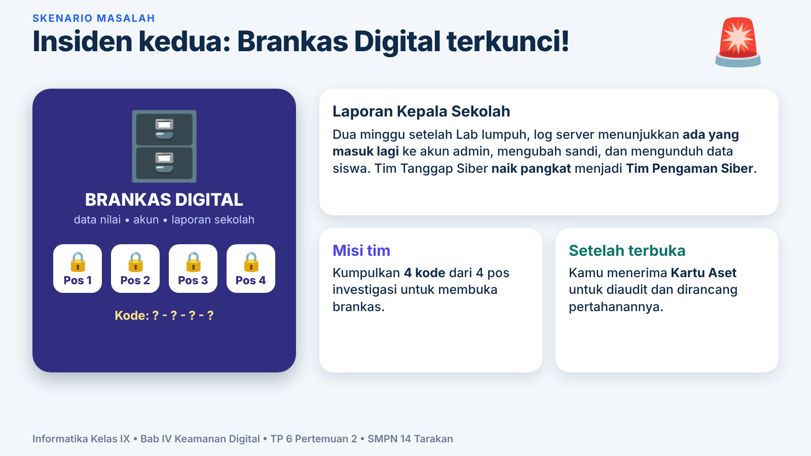
2Segitiga CIA
Tiga hal yang kita lindungi: Kerahasiaan, Integritas, Ketersediaan.
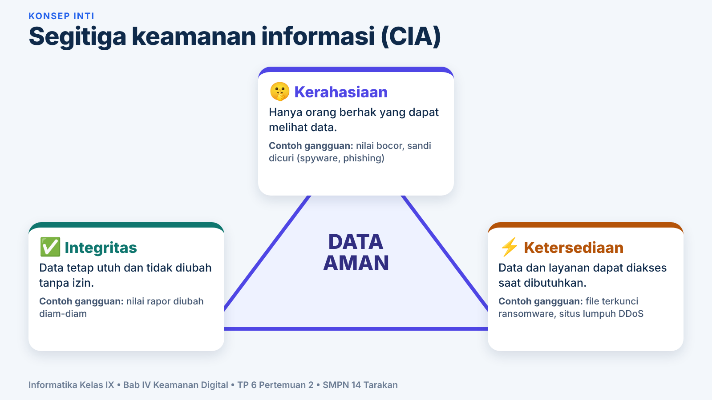
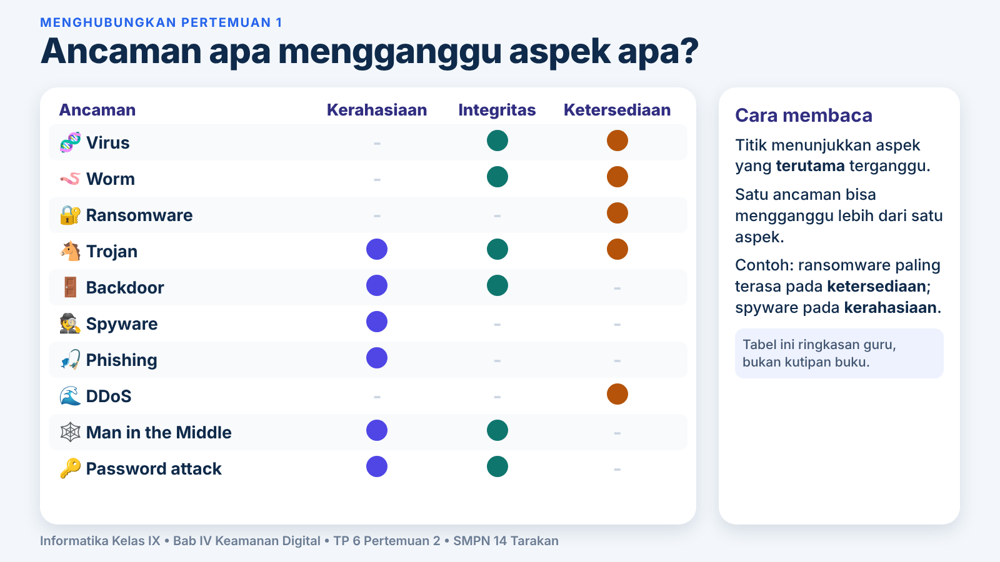
Latihan: aspek mana yang terganggu?
3Risiko dan kontrol
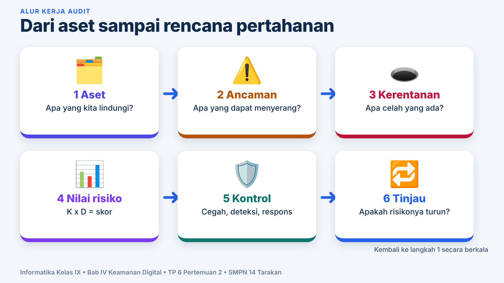
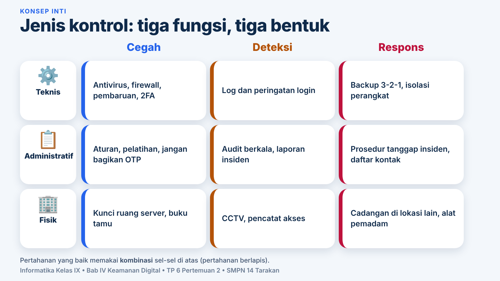
Lab risiko: skor = K x D
Latihan: cegah, deteksi, atau respons?
4Pos 1: Sandi dan sidik jari
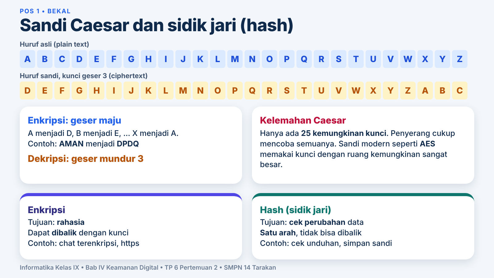
Mesin sandi Caesar
Hash mainan (alat peraga)
Jumlah nilai huruf lalu ambil angka satuan. Cobalah NILAI dan NIALI: hasilnya sama! Itu tabrakan, jadi hash mainan ini tidak aman. Hash asli dibuat agar tabrakan sangat sulit.
Misi Pos 1
Dekripsi KLWXQJ KDVK NDWD QLODL (kunci 3) dengan mesin di atas. Kata terakhir adalah yang harus di-hash. Berapa hash katanya?
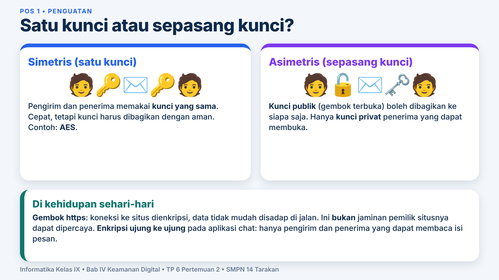
5Pos 2: Laboratorium sandi
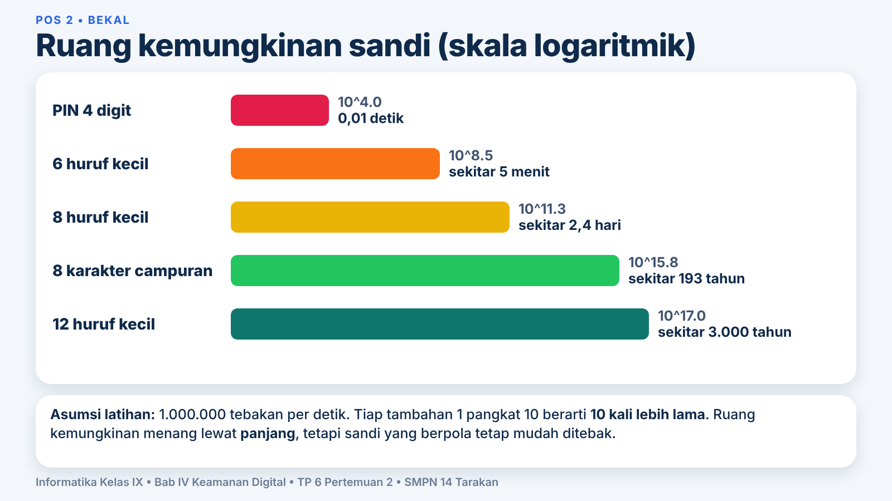
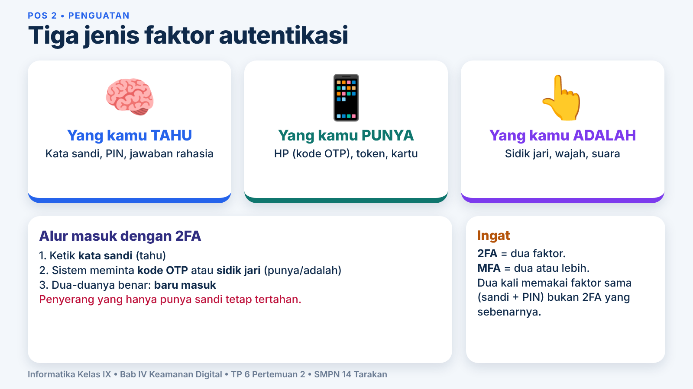
Kalkulator ruang kemungkinan
Asumsi latihan: 1.000.000 tebakan per detik. Penyerang sungguhan bisa lebih cepat; login daring biasanya membatasi percobaan.
Penguji pola sandi
Dihitung di perangkatmu saja, tidak dikirim ke mana pun. Ini penilaian sederhana untuk latihan, bukan alat keamanan sungguhan.
Misi Pos 2
Dengan kalkulator, cari panjang minimal huruf kecil (26 simbol) yang ruang kemungkinannya melebihi 8 karakter campuran (94 simbol, panjang 8).
6Pos 3: Detektif log
Klik baris yang menurutmu berasal dari penyerang, lalu tekan Periksa. (Alamat IP fiktif.)
| No | Waktu | Akun | IP | Aktivitas | Hasil |
|---|
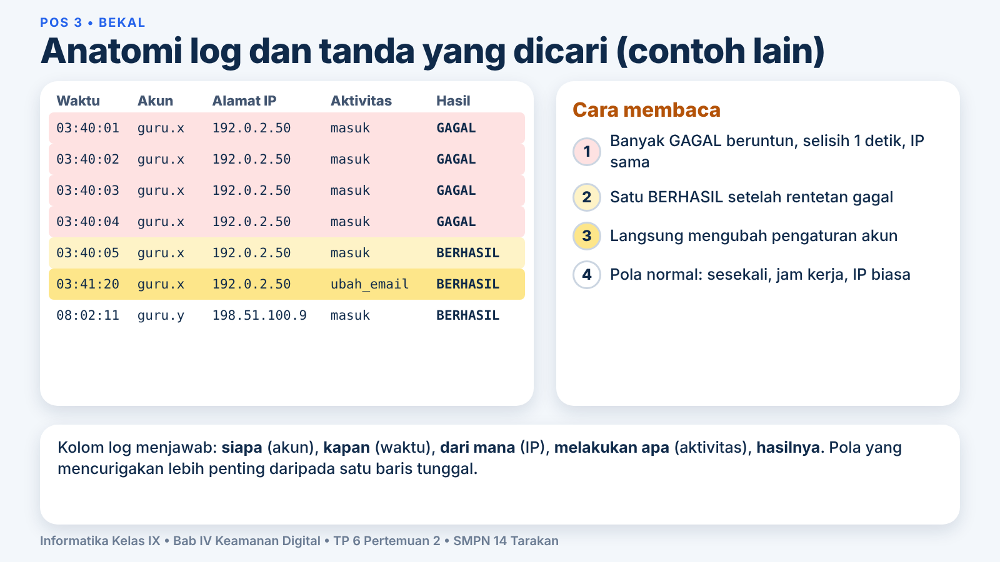
Misi Pos 3
Berapa kali GAGAL sebelum BERHASIL pada IP penyerang?
7Pos 4: Waspada rekayasa sosial
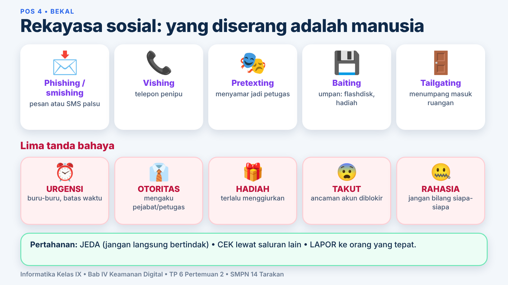
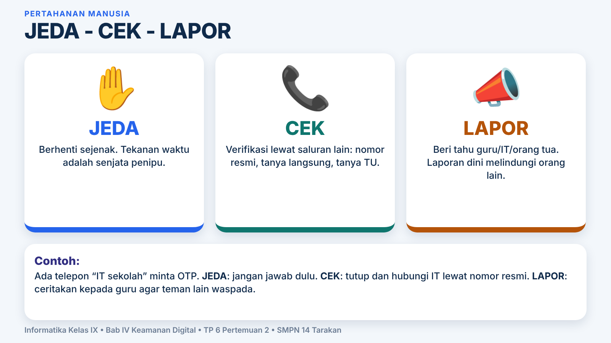
Serangan atau aman?
Misi Pos 4
Jumlahkan nomor pesan yang AMAN.
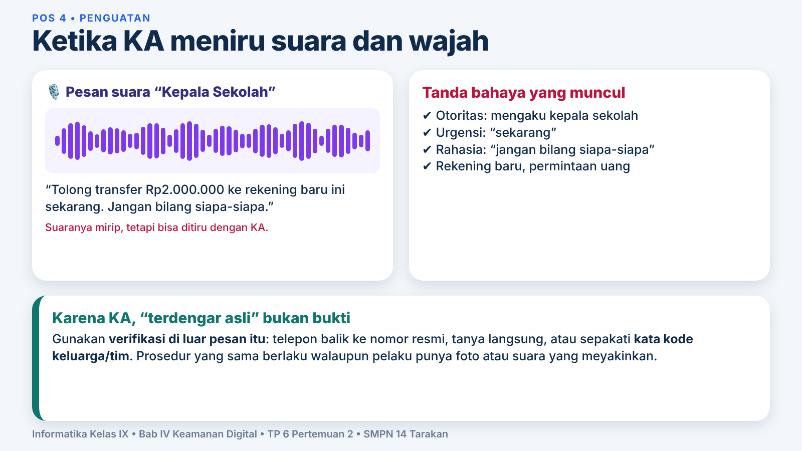
8Brankas Digital dan audit
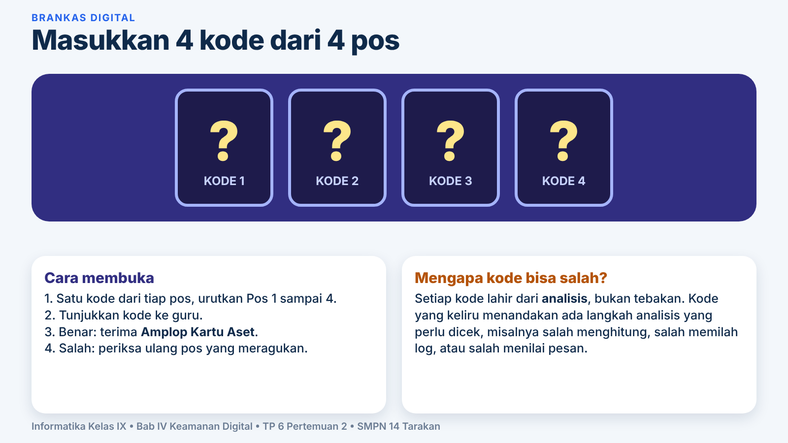
Mini audit: pilih Kartu Aset
Tulis satu kontrol cegah, deteksi, respons di kertas LKPD, lalu bandingkan dengan contoh.
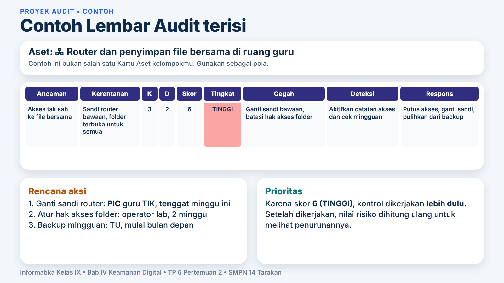
9Kuis penutup
Jawab semua soal lalu lihat skormu.
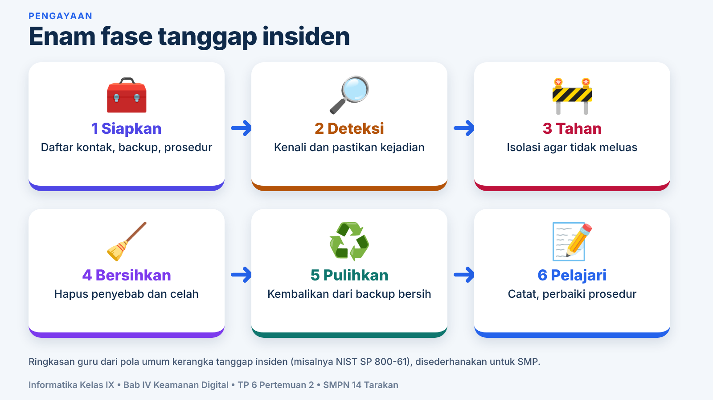
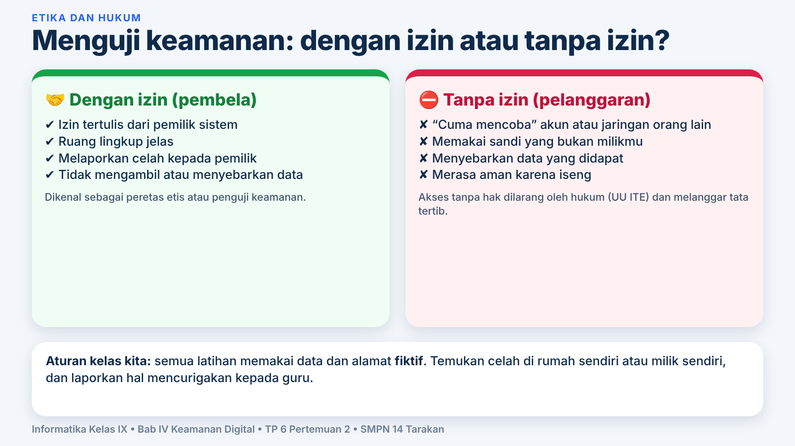